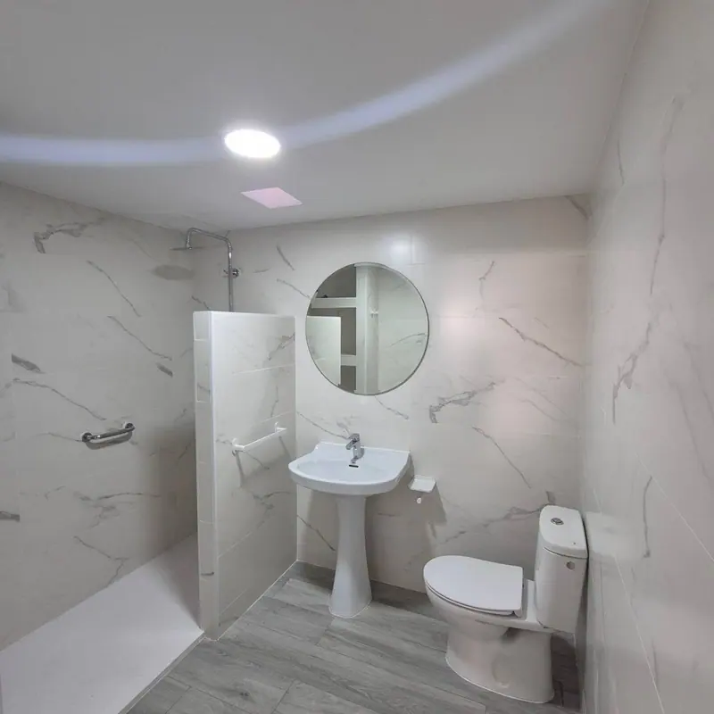
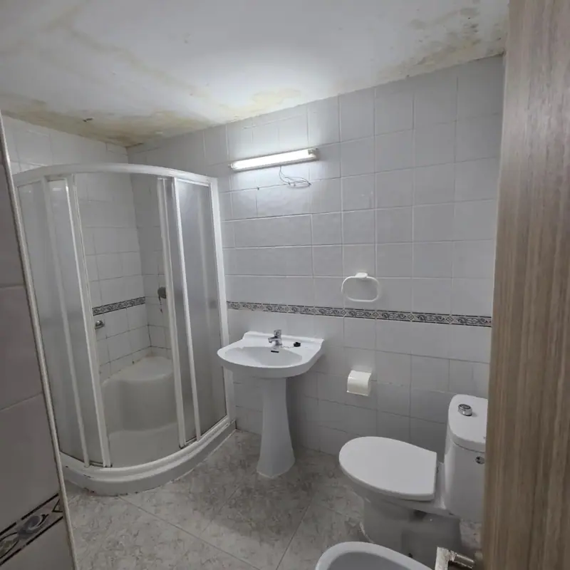

Parte nº 0110 de septiembre de 2026
Cuarto de baño completo
Baño · albañilería, fontanería, electricidad y pladur
- Demolición del cuarto de baño
- Electricidad y fontanería del baño
- Trasdosado con aislante y pladur antihumedad
- Techo de pladur con claraboya para ventilar
- Mueble de mampostería
- Alicatado imitación mármol
- Suelo porcelánico imitación madera
- Sanitarios, accesorios y plato de ducha
Otro clientesatisfechoReformas Badajoz SR